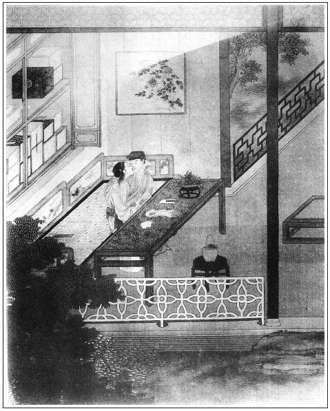

張回秋菊與金蓮何仇？但類各不同，互相怨恨耳。然而夏去秋來，池蓮褪粉，籬菊綻金，自是不得不然之時勢。又一屋中，蓮、梅、菊備三時，而添一陳敬濟之敗荷，則秋深時候，故應暫讓秋菊說話。
此回方是結果金蓮之楔子，卻用一縱一擒，又一縱，又一擒作章法。
寫月娘上孟蘭會，又早為岳廟燒香作襯，以及敬濟推宣卷而作弊，總為月娘丑絕，且明明書其罪案也。
春梅寄柬，固寫金蓮，亦寫春梅。蓋弄一得雙後，不一補寫春梅，則後日何以聯屬假弟妹之情？而前一回方寫熱心冷面，又不便即暢言春梅，須用此回一補。文字如下場鼓，一陣急一陣，逼金蓮下場，卻又不得不故為迂緩其調，以為春梅地也。作者苦心，作文之難如此。
詩曰：
如此鍾情古所稀，吁嗟好事到頭非。
汪汪兩眼西風淚，猶向陽台作雨飛。
月有陰晴與圓缺，人有悲歡與會別。
擁爐細語鬼神知，空把佳期為君說。

話說潘金蓮見陳敬濟天明越牆過去了，心中又後悔。繡旁妙處只是得情。次日卻是七月十五日，吳月娘坐轎子往地藏庵薛姑子那裡，替西門慶燒盂蘭會箱庫去。張夾寫月娘自西門死後，只是如此等事，便使月娘不堪。金蓮眾人都送月娘到大門首。回來，孟玉樓、孫雪娥、大姐，都往後邊去了。獨金蓮落後，走到前廳儀門首，撞遇敬濟正在李瓶兒那邊樓上，尋瞭解當庫衣物抱出來。張夾凡會處必如此寫，可想其西門失計。金蓮叫住，便向他說：「昨日我說了你幾句，你如何使性兒今早就跳出來了，莫不真個和我罷了？」張夾妙，是悔時心事。敬濟道：「你老人家還說哩，一夜誰睡著來！險些兒一夜不曾把我麻犯死了，你看把我臉上肉也撾的去了！」婦人罵道：「賊短命，既不與他有首尾，賊人膽兒虛，你平白走怎的？」繡眉收科處語便情柔。張夾反如此說，是悔語。敬濟道：「天將明瞭，不走來，不教人看見了？張夾便過入秋菊。誰與他有甚事來？」金蓮道：「既無此事，你今晚再來，我慢慢問你。」敬濟道：「吃你麻犯了人，一夜誰合眼兒來？等我白日裡睡一覺兒去。」婦人道：「你不去，和你算帳。」繡旁絕有生色。張夾極語，亦是悔語。說畢，婦人回房去了。敬濟拿衣物往鋪子裡來，做了一回買賣，歸到廂房，歪在床上睡了一覺。盼望天色晚了，要往金蓮那邊去。不想到黃昏時分，天色一陣黑陰來，窗外簌簌下起雨來。繡旁絕有生色。張夾如此寫來。正是：
蕭蕭庭院黃昏雨，點點芭蕉不住聲。
這敬濟見那雨下得緊，說道：「好個不做美的天！他甫能教我對證話去，今日不想又下起雨來，好悶倦人也。」於是長等短等，那雨不住，簌簌直下到初更時分，下的房簷上流水。這小郎君等不的雨住，披著一條茜紅氈子臥單在身上。繡眉鄭詩曰：「風雨如晦。」讀此方知其妙。那時吳月娘來家，大姐與元宵兒都在後邊沒出來。於是鎖了房門，從西角門大雨裡走入花園，推了推角門。婦人知他今晚必來，早已分付春梅灌了秋菊幾鍾酒，同他在炕房裡先睡了，以此把角門虛掩。這敬濟推開角門，便挨身而入。進到婦人臥房，見紗窗半啟，銀燭高燒，桌上酒果已陳，金尊滿泛。兩個並肩疊股而坐。婦人便問：「你既不曾與孟三兒勾搭，這簪子怎得到你手裡？」敬濟道：「本是我昨日在花園荼䕷架下拾的，若哄你，便促死促滅。」張夾荼䕷架作幾次供案，不比葡萄架更甚乎？婦人道：「既無此事，還把這簪子與你關頭，繡旁又伏。我不要你的。只要把我與你的簪子、香囊、帕兒物事收好著，少了我一件兒，我與你答話。」兩個吃酒下棋，到一更方上床安寢。顛鸞倒鳳，整狂了半夜。婦人把昔日西門慶枕邊風月，一旦盡付與情郎身上。
卻說秋菊在那邊屋裡，忽聽見這邊屋裡恰似有男子聲音說話，更不知是那個。到天明雞叫時分，秋菊起來溺尿，忽聽那邊房內開的門響，朦朧月色，雨尚未止，打窗眼看見一人，披著紅臥單，從房中出去了。「恰似陳姐夫一般。繡眉先看得模模糊糊，妙。原來夜夜和我娘睡。張夾秋菊此時方知，然則前在炕上睡，乃真睡也，與春梅睡自不同。我娘自來會撇淨，乾淨暗裡養著女婿！」張夾怨毒之於人大矣哉。次日，逕走到後邊廚房裡，就如此這般對小玉說。不想小玉和春梅好，張夾月娘兩婢皆為他人所使，其齊家之法可知。又告訴春梅說：「秋菊說你娘養著陳姐夫，昨日在房裡睡了一夜，今早出去了。大姑娘和元宵又沒在前邊睡。」這春梅歸房一五一十對婦人說：「娘不打與這奴才幾下，教他騙口張舌，葬送主子。」金蓮聽了大怒，就叫秋菊到面前跪著，罵道：「教你煎熬粥兒，就把鍋來打破了。你敢屁股大，吊了心也怎的？我這幾日沒曾打你這奴才，骨朵癢了！」於是拿棍子向他脊背上盡力狠抽了三十下，打得秋菊殺豬也似叫，身上都破了。繡眉金蓮此時不宜如此狠打，倘肯施小惠，小人之心反為我用矣。春梅走將來說：「娘沒的打他這幾下兒，只好與他撾癢兒罷了。旋剝了，叫將小廝來，拿大板子盡力砍與他二三十板，看他怕不怕？湯他這幾下兒，打水不深的，只像斗猴兒一般。他好小膽兒，你想他怕也怎的？做奴才，裡言不出，外言不入，都似你這般，好養出家生哨兒來了。」繡眉春梅此語，可為天下奴才之訓。張夾春終結自有氣勢。秋菊道：「誰說甚麼來？」婦人道：「還說嘴哩！賊破家害主的奴才，還說甚麼！」幾聲喝的秋菊往廚下去了。正是：
蚊蟲遭扇打，只為嘴傷人。
一日，八月中秋時分，金蓮夜間暗約敬濟賞月飲酒，和春梅同下鰲棋兒。晚夕貪睡失曉，至茶時前後還未起來，頗露圭角。不想被秋菊睃到眼裡，連忙走到後邊上房，對月娘說。不想月娘才梳頭，小玉正在上房門首站立。秋菊拉過他一邊，告他說：「俺姐夫如此這般，昨日又在我娘房裡歇了一夜，如今還未起來哩。前日為我告你說，打了我一頓。今日真實看見，我原不賴他，請奶奶快去瞧去。」小玉罵道：「張眼露睛奴才，又來葬送主子，俺奶奶梳頭哩，還不快走哩。」月娘便問：「他說甚麼？」小玉不能隱諱，只說：「五娘使秋菊來請奶奶說話。」更不說出別的事。
這月娘梳了頭，輕移蓮步，驀然來到前邊金蓮房門首。張夾西門一死，如金蓮、春梅豈可使之居於儀門外乎？早被春梅看見，慌的先進來，報與金蓮。金蓮與敬濟兩個還在被窩內未起，聽見月娘到，兩個都吃了一驚，慌做手腳不迭，連忙藏敬濟在床身子裡，用一床錦被遮蓋的沿沿的。繡眉倉卒中隱藏得頗有條理，想亦姻緣尚未應敗露耳。教春梅放小桌兒在床上，拿過珠花來，且穿珠花。不一時，月娘到房中坐下，說：「六姐，你這咱還不見出門，只道你做甚，原來在屋裡穿珠花哩。」一面拿在手中觀看，誇道：「且是穿的好，正面芝麻花，兩邊隔子眼方勝兒，周圍蜂趕菊，剛湊著同心結，且是好看。到明日，你也替我穿恁條箍兒戴。」婦人見月娘說好話兒，那心頭小鹿兒才不跳了，一面令春梅：「倒茶來與大娘吃。」少頃，月娘吃了茶，坐了回去了，說：「六姐快梳了頭，後邊坐。」金蓮道：「曉得。」打發月娘出來，連忙攛掇敬濟出港，往前邊去了。春梅與婦人整捏兩把汗，婦人說：「你大娘等閒無事再不來，今日大清早辰來做甚麼？」春梅道：「左右是咱家這奴才嚼舌來。」不一時，只見小玉走來，如此這般：「秋菊後邊說去，說姐夫在這屋裡明睡到夜，夜睡到明，被我罵喝了他兩聲，他還不動。繡眉小玉已明白說破。俺奶奶問我，沒的說，只說五娘請奶奶說話，方才來了。你老人家只放在心裡，大人不見小人之過，只堤防著這奴才就是了。」張夾不知正是奴才防主子。
看官聽說，雖是月娘不信秋菊說話，只恐金蓮少女嫩婦沒了漢子，日久一時心邪，著了道兒。恐傳出去，被外人唇舌。又以愛女之故，不教大姐遠出門，把李嬌兒廂房挪與大姐住，教他兩口兒搬進後邊儀門裡來。張夾月娘總是失計。夫可以搬女兒進來，何不搬金蓮進來？一天之事畢矣。既無敬濟，月娘豈不知向日琴童之事乎？作者罪月娘總是隱筆。遇著傅夥計家去，方教敬濟輪番在鋪子裡上宿。取衣物藥材，俱同玳安兒出入。各處門戶都上了鎖鑰，丫鬟婦女無事不許往外邊去。凡事都嚴緊，這潘金蓮與敬濟兩個熱突突恩情都間阻了。張夾一大間阻。
正是：
世間好事多間阻，就裡風光不久長。
有詩為證：
幾向天台訪玉真，三山不見海沉沉。
侯門一日深如海，從此蕭郎是路人。
潘金蓮自被秋菊洩露之後，與敬濟約一個多月不曾相會。金蓮每日難挨，怎禁繡幃孤冷，畫閣淒涼，未免害些木邊之目，田下之心。脂粉懶勻，茶飯頓減，帶圍寬褪，懨懨瘦損，每日只是思睡，扶頭不起。張夾所謂相思，如此寫去。春梅道：「娘，你這等虛想也無用，昨日大娘留下兩個姑子，我聽見說今晚要宣卷，張夾月娘之罪，不言自見。後邊關的儀門早。晚夕，我推往前邊馬房內取草裝枕頭，等我到鋪子裡叫他去。我好歹叫了姐夫和娘會一面，娘心下如何？」婦人道：「我的好姐姐，你若肯可憐見，叫得他來，我恩有重報，決不有忘。」繡旁情急苦語。春梅道：「娘說的是那裡話！你和我是一個人，爹又沒了，你明日往前後進，我情願跟娘去。咱兩個還在一處。」婦人道：「你有此心，可知好哩。」
到於晚夕，婦人先在後邊月娘前，假托心中不自在，用了個金蟬脫殼，歸到前邊。月娘後邊儀門老早開了，丫鬟婦人都放出來，要聽尼僧宣卷。張夾可殺，月娘壞事到底。金蓮央及春梅，說道：「好姐姐，你快些請他去罷。」春梅道：「等我先把秋菊那奴才，與他幾鍾酒，灌醉了，倒扣他在廚房內。我方好去。」於是篩了兩大碗酒，打發秋菊吃了，扣他在廚房內，拿了個筐兒，走到前邊，先撮了一筐草，就悄悄到印子鋪門首，低聲叫門。正值傅夥計不在鋪中，往家去了。獨有敬濟在炕上才歪下，忽見有人叫門，聲音像是春梅，連忙開門，見是他，滿面笑道：「果然是小大姐，沒人，請裡面坐。」春梅走入房內，便問：「小廝們在那裡？」繡眉寫得情景活現，絕無一呆語死容。張夾金蓮卻帶丫鬟氣，春梅卻帶夫人氣。敬濟道：「玳安和平安，都在那邊生藥鋪中睡哩，獨我一個在此受孤恓，挨冷淡。」春梅道：「俺娘多上覆你，說你好人兒，這幾日就門邊兒也不往俺那屋裡走走去。說你另有了對門主顧兒了，不稀罕俺娘兒每了。」張夾又挽冷面，又伏嚴州。敬濟道：「說那裡話，自從那日著了諕，驚散了，又見大娘緊門緊戶，所以不敢走動。」春梅道：「俺娘為你這幾日心中好生不快，逐日無心無緒，茶飯懶吃，做事沒入腳處。今日大娘留他後邊聽宣卷，也沒去，就來了。一心只是牽掛想你，巴巴使我來，好歹教你快去哩。」敬濟道：「多感你娘兒們厚情，何以報答？你略先走一步兒，我收拾了，隨後就去。」一面開櫥門，取出一方白綾汗巾，一副銀三事挑牙兒與他。就和春梅兩個摟抱，按在炕上，且親嘴咂舌，不勝歡謔。正是：
無緣得會鶯鶯面，且把紅娘去解讒。張眉二語乃西門耍來爵女人者，可歎！
兩個戲了一回，春梅先拿著草歸到房來，一五一十對婦人說：「姐夫我叫了，他便來也。見我去，好不喜歡，又與了我一方汗巾，一付銀挑牙兒。」婦人便叫春梅：「你在外邊看著，只怕他來。」
原來那日正值九月十二三，月色正明。陳敬濟旋到生藥鋪，叫過來安兒來這邊來。他只推月娘叫他聽宣卷，逕往後邊去了。張夾月娘可殺。何其此後寫月娘不堪，一筆不放鬆也。因前邊花園門關了，打後邊角門走入金蓮那邊，搖木槿花為號。春梅連忙接應，引入房中。婦人迎門接著，笑罵道：「賊短命，好人兒，就不進來走走兒。」敬濟道：「我巴不得要來哩，只怕弄出是非來，帶累你老人家，不好意思。」說著，二人攜手進房坐下。春梅關上角門，房中放桌兒，擺上酒餚。婦人和敬濟並肩疊股而坐，春梅打橫，把酒來斟，穿杯換盞，倚翠偎紅，吃了一回。吃的酒濃上來，婦人嬌眼乜斜，烏雲半嚲，張夾是乾渴情景。取出西門慶淫器包兒，裡面包著相思套、顫聲嬌、銀托子、勉鈴一弄兒淫器。繡眉西門慶雖死，而衣缽得其傳矣。張夾所云傳授衣缽。教敬濟便在燈光影下，婦人便赤身露體，仰臥在一張醉翁椅兒上。敬濟亦脫的上下沒條絲，又拿出春意二十四解本兒，放在燈下，張夾有瓶兒在內。照著樣兒行事。張夾方是西門一生報應。婦人便叫春梅：「你在後邊推著你姐夫，只怕他身子乏了。」那春梅真個在後邊推送，張夾如此寫春梅，至淫極田地，卻依舊為之留些身份。敬濟那話插入婦人牝中，往來抽送，十分暢美，不可盡言。不想秋菊在後邊廚下，睡到半夜裡起來淨手，見房門倒扣著，推不開。於是伸手出來，撥開鳥吊兒，大月亮地裡，躡足潛蹤，走到前房窗下。打窗眼裡望裡張看，見房中掌著明晃晃燈燭，三個人吃得大醉，都光赤著身子，正做得好。兩個對面坐著，春梅便在身後推車，三人串作一處。繡眉秋菊看見凡二遍，至此方明。絕沒要緊，亦有淺深。但見：
一個不顧夫主名分，
一個那管上下尊卑。
一個椅上逞雨意雲情，
一個耳畔說山盟海誓。
一個寡婦房內翻為快活道場，
一個丈母根前變作污淫世界。
一個把西門慶枕邊風月盡付與嬌婿，
一個將韓壽偷香手段悉送與情娘。
正是：
寫成今世不休書，結下來生歡喜帶。
秋菊看到眼裡，口中不說，心內暗道：「他們還在人前撇清要打我，今日卻真實被我看見了。到明日對大娘說，莫非又說騙嘴張舌賴我不成！」繡旁蠢語。於是瞧了個不亦樂乎，依舊還往廚房中睡去了。三個整狂到三更時分才睡。春梅未曾天明先起來，走到廚房，見廚房門開了，便問秋菊。秋菊道：「你還說哩。我尿急了，往那裡溺？我拔開鳥吊，出來院子裡溺尿來。」繡眉數語便不蠢。春梅道：「成精奴才，屋裡放著榪子，溺不是！」秋菊道：「我不知榪子在屋裡。」兩個後邊聒噪，敬濟天明起來，早往前邊去了。正是：
兩手劈開生死路，翻身跳出是非門。
那婦人便問春梅：「後邊亂甚麼？」這春梅如此這般，告說秋菊夜裡開門一節。婦人發恨要打秋菊。這秋菊早辰又走來後邊，報與月娘知道，被月娘喝了一聲，罵道：「賊葬弄主子的奴才！前日平空走來，輕事重報，說他主子窩藏陳姐夫在房裡，明睡到夜，夜睡到明，叫了我去。他主子正在床上放炕桌兒穿珠花兒，那得陳姐夫來？落後陳姐夫打前邊來，恁一個弄主子的奴才！一個大人放在屋裡，端的是糖人兒，不拘那裡安放了？一個砂子那裡發落？莫不放在眼裡不成？傳出去，知道的是你這奴才葬送主子。不知道的，只說西門慶平日要的人強多了，人死了多少時兒，老婆們一個個都弄的七顛八倒。恰似我的這孩子，也有些甚根兒不正一般。」繡眉數語不減中庭之泣。張夾月娘得意語，總是驕橫托大故也。於是要打秋菊。諕得秋菊往前邊疾走如飛，再不敢來後邊說了。
婦人聽見月娘喝出秋菊，不信其事，心中越發放大膽了。繡旁敗露在此。西門大姐聽見此言，背地裡審問敬濟。敬濟道：「你信那汗邪了的奴才！我昨日見在鋪裡上宿，幾時往花園那邊去來？花園門成日關著。」大姐罵道：「賊囚根子，你別要說嘴，你若有風吹草動，到我耳朵內，惹娘說我，你就信信脫脫去了，再也休想在這屋裡了。」張夾必寫大姐，文字之無脫漏處。敬濟道：「是非終日有，不聽自然無。大娘眼見不信他。」繡旁辯得也妙。張夾志已肆矣。大姐道：「得你這般說就好了。」正是：
誰料郎心輕似絮，那知妾意亂如絲。
文回文禹門云：潘、陳二人之事，上回已寫得淋漓盡致，此回似可不必再細寫，轉失作者報應之本旨。不知前回是寫二人得手之樂，此回是寫二人將敗之機，故將春梅亦寫出其不堪來。其狠也，在金蓮之上，其淫也，不在金蓮之下。可見西門生前，仗勢裝腔，都是假做作，西門死後，赤身露體，乃是真情形。西門慶被他瞞過，許多閱者亦被他瞞過，何也？至於嫁守備扶正，是他命好，不是他品高。月娘感於炎涼，豈閱者亦為炎涼所惑耶？西門慶立法於先，陳敬濟傚尤於後，亦可謂丈人冰清、頗能大戰，女婿玉潔，不畏夾攻矣。
在作者之書中，閱者之目中，秋菊之口中，明明白白，清清楚楚，如此如此，乃三告而不聽，可謂強於三報殺人、三傳有虎者矣。若月娘者，呼為糊塗婦人則可，視為陰險婦人則不可。若果陰險，當此之時，正是索瘢求疵之日，文致周納之秋，竟將金蓮輕輕放過，當日撒潑事情，豈能忘之耶？無事尚想生非，有隙反置不問，此正月娘糊塗處，亦正月娘老實處。批書者何以忘卻西門慶，專罪吳月娘也。
至月娘之糊塗可恨處，則在留姑子宣卷。此何等事，而晝夜為之也。西門生前，已無忌憚，西門死後，更屬荒唐。揆其心思，雖然夫死堪悲，究竟生子可喜，況夫在不過眾人之所爭，夫死亦非一人之獨寡。俗云：有子萬事足。偌大傢俬，不怕旁人劫奪矣。顧無子望有子，子生望長生。其生也授法於尼姑，其長生也還仰賴乎菩薩，此所以宣卷而外，餘皆其後焉者也。愚何如乎？古今未有愚人而陰險者，是可見批者之誤矣。而況入廟燒香，拜佛求子，以吃齋為行好，以佈施為陰功；聽僕婦之讒言，信奴婢之妄語，認尼姑為師父，尊道婆為神仙，此等婦女，不一而足，又豈僅一月娘哉！
按：「若月娘者，呼為糊塗婦人則可，視為陰險婦人則不可。」系指竹坡原評：「故曰此書中，月娘為第一惡人罪人，予生生世世不願見此等男女也。然而其惡處，總是一個不知禮。夫不知禮，則其志氣日趨於奸險陰毒矣，則其行為必不能防微杜漸，循規蹈矩矣。」